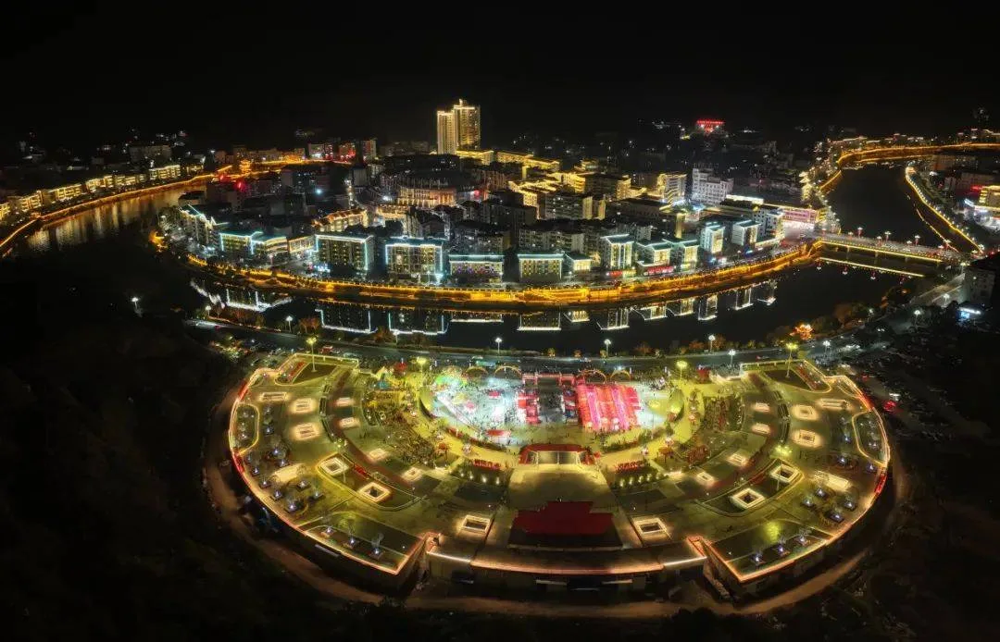

清流：夜市寻美味，“逛吃”享自在
Qingliu: Savoring Delights at the Night Market, Enjoying Leisurely Eat-and-Walk Experience

中文原文
2025-08-19 08:51:02 来源：福建日报 责任编辑：周冬
锅勺碰撞间,伴随着跳动的火苗和沸腾的热气,一碗碗色泽诱人的粉面、一盘盘香气扑鼻的小炒新鲜出炉……
近日,走进清流县“清流”夜市,只见夜市里人来人往,顾客或是打包,或是围着小桌享受美食,整条街区涌动着浓浓的烟火气。
市民张香妹常到夜市品尝小吃。“这里的小吃种类多、价格优惠,即使是普通市民都消费得起。”
“每天傍晚四五点人就陆陆续续来了,晚上6点人流量进入高峰期,生意也开始忙乎起来,忙到夜里一两点收摊回家是常有的事。”摊主陈爱珍介绍。
凭借位于城区中心且人口相对集中的优势,如今,“清流”夜市已成为当地居民和游客休闲放松的首选去处。自2021年8月底对外开放以来,该夜市共吸引30余家商户、超100名从业人员进驻。
“一晚上的营业额有五六百元,周末或节假日还会更多些。”陈爱珍说,她在夜市摆摊已有三四年,自己对目前的收入很满足。
清流县城市管理综合执法大队中队长邹坤荣介绍,该夜市成立以前,小吃摊主大多散布于街头巷尾。“为了保证食品安全,提升市容市貌,2020年,县里规划建设‘清流’夜市,为自由创业人员提供统一经营场所。现在,夜市里的摊主不用交摊位费和公共水电费,希望通过这种方式,让再就业人员有更广阔的创业空间。”
近年来,清流县积极适应消费升级新趋势,推出提振经济促消费系列举措,着力丰富夜间经济消费业态,通过打造“清流”夜市、“龙津”夜市等业态多元、管理规范的夜市经营点,让清流的夜晚亮起来、人气聚起来、城市活起来。目前,全县夜市总摊位60余个,其中美食小吃摊位30余个、排档摊位30余个,年营业总额近千万元。
English translation
August 19, 2025, 08:51:02 | Source: Fujian Daily | Editor: Zhou Dong
Amid the clatter of spatulas and the dance of flickering flames, steaming bowls of noodles and fragrant stir-fries are freshly served...
Recently, stepping into the Qingliu Night Market in Qingliu County, visitors are greeted by bustling crowds. Some customers grab takeaway meals, while others sit at small tables to enjoy the food. The whole street is filled with a warm, lively vibe.
“There’s a huge variety of snacks here, and they’re very affordable for ordinary people like us.” said Zhang Xiangmei, a local resident who frequently visits the market.
“Customers start coming around 4 or 5 o’clock every afternoon. The place gets really busy from 6 p.m., and we usually don’t close until 1 or 2 o’clock in the morning,” said stall owner Chen Aizhen.
Located in the downtown core with a concentrated population, the Qingliu Night Market has become the top spot for relaxation for locals and tourists. Since opening in late August 2021, it has attracted more than 30 merchants and over 100 employees.
“I make 500 to 600 yuan a night, and even more on weekends and holidays,” said Chen, who has run her stall here for three to four years and is happy with her income.
Zou Kunrong, Captain of the Qingliu County Urban Management Comprehensive Law Enforcement Brigade, said that before the night market was built, snack vendors were scattered across the city.
“To ensure food safety and improve the city’s look, the county planned and built the Qingliu Night Market in 2020, providing a unified business space for self-employed entrepreneurs. Now vendors don’t pay stall fees or public water and electricity bills. We hope this can create more space for re-employment and entrepreneurship,” he added.
In recent years, Qingliu County has kept up with the new trend of consumption upgrading and launched a series of measures to boost the economy and stimulate consumption. It has focused on developing its night economy by building well-managed, multi-format night markets such as the Qingliu and Longjin Night Markets, lighting up the county’s evenings, drawing in crowds and bringing the city to life.
At present, the county has more than 60 night market stalls in total, including over 30 snack stalls and 30 casual dining stalls, with an annual total revenue of nearly 10 million yuan.